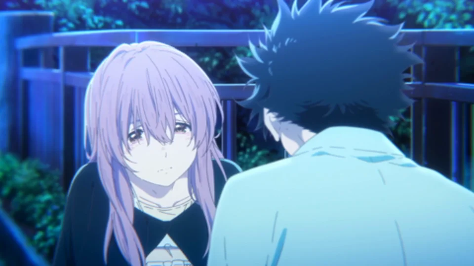
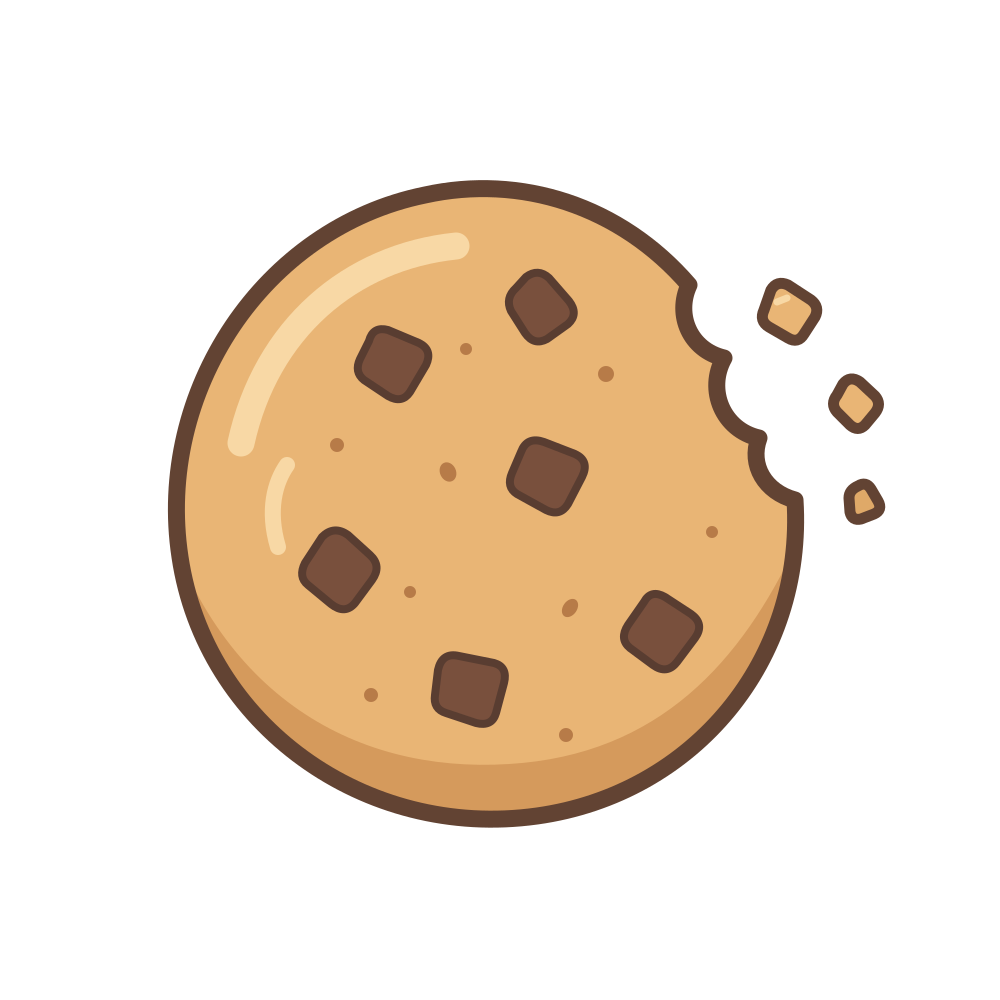

480p4× upscaleAI upscale, up to 4×
Real-ESRGAN with a model for anime or camera footage. Drag the handle: left is the original, right is Crumb.

Crumb Get Crumb freeThe After Effects editing toolkit
Upscale soft footage, cut dead frames and smooth out motion. Save your best shots in the Clip Library and pull them into your next edit.
After Effects 2020 or newer · Windows · instant download
Layers
Transform
Auto captions
Words on screen
Runs on this PC
New in Crumb V2
Pick a clip, check your settings, and follow the render live. Drop the result above your source layer or replace it.

480p4× upscaleReal-ESRGAN with a model for anime or camera footage. Drag the handle: left is the original, right is Crumb.
Finds frames that repeat and cuts them into a tighter clip. Tap any frame in the panel to jump to it in your timeline.
RIFE draws the frames in between for smooth playback, 60 fps, or 2× and 4× slow motion.
What's inside
Finds every kick and snare, or a steady BPM grid, and drops markers on them. Then cut every layer on the beat in one click.
Speech to text on your own PC. Every caption lands on its words, one after another, never overlapping. Audio never leaves your computer.
Shape eases with real Value and Speed graphs, apply them to any keyframes, and keep your own curves.
Save keyframes and effect stacks into your own folders. Apply them anywhere in one click, back them up, share them.
Any effect you own, Deep Glow, Sapphire, Continuum included, saved with your settings and added in one click.
Wiggle, loop, bounce, jitter, link. Stack blocks, see the real expression, edit it by hand if you want.
Organize saved shots by movie or show. Search by name or tag, preview a shot, and insert it at the playhead.
Track active editing time and look up previous sessions. The timer pauses after the idle interval you choose.
Choose a palette for Crumb. On supported Windows AE builds, customise the workspace colours, background image and transparency.
Adjustment layer, solids, shapes, nulls with parenting, anchor point pad, center, fit to comp, mirror, pre-compose and un-pre-compose, freeze frame, save frame, quick text in your style, and color paint.
Get help fast, hear about every release first, and share your edits with editors who care about the cut.
Free to join · takes ten seconds
Install
.zxp file with the free aescripts ZXP Installer.Window › Extensions › Crumb and dock it anywhere.Build 0.1.21 · After Effects 2020 or newer
Free
Full extension · No payment required · Also on Payhip
If Crumb saves you time, you can chip in to fund new features and fixes. Everything stays free either way, and every supporter gets a thank-you letter by email.
FAQ
The panel supports After Effects 2020 and newer on Windows. Native workspace recolouring is verified for AE 26.3.0 build 87. Crumb's own panel palettes work independently.
Video processing runs on your PC after a one-time tools download. AI upscaling and motion smoothing use a Vulkan-capable GPU. Dead-frame removal runs through FFmpeg.
Only once: the first time, Crumb downloads the free speech engine and a model (about 150 MB). After that, captions are made on your PC and your audio never leaves it.
Yes. The effects library and presets work with any effect you have installed, including Deep Glow, Sapphire and Continuum. If a preset uses an effect someone doesn't have, Crumb skips it and says so.
Open the .zxp file with a ZXP installer, restart After Effects and open Window › Extensions › Crumb. Steps are above.
For a bug, open Tools › Settings › Report a bug or choose Report on an error message. You can edit or exclude recent errors before sending the report privately. For ideas, join the Crumb Discord.